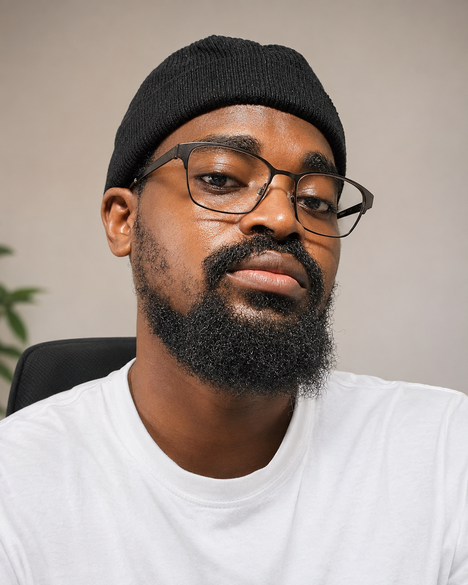

A PLACE TO ARRIVE
Insignia Courts
01 / HOSPITALITYA serviced-apartment platform bringing property discovery, guest experiences and reservations into one connected digital journey.
LaravelReactAPIMobile
Visit the experience ↗I build useful digital products from the first rough sketch to the last careful detail — bringing product thinking, thoughtful design and dependable engineering together.

Thoughtful technology, made practical — and made to last.
SCROLL A LITTLE ↓A handful of products and platforms I've helped bring to life. Different problems, same care for the people on the other side of the screen.
A peek at how I like to work: stay curious, make the complicated feel clear, and keep the details connected to the bigger picture.
Start with the people, the context and the thing that actually needs to change. Get specific before getting clever.
Map the experience, test the assumptions and choose the simplest system that can do the job well.
Ship in thoughtful steps, sweat the small stuff and keep learning from what happens in the real world.
I'm Muhammad Mukhtar Shittu — a software developer who enjoys turning complex ideas into straightforward digital experiences. I work across the stack, from the interface people touch to the services and infrastructure behind it.
I care about maintainable code, considerate user experience and systems that keep working after launch. I also teach and share technology, because making something understandable is part of making it useful.
Outside the editor, I'm usually learning something new, untangling a practical problem or thinking through how technology can make everyday work a little easier.
From a first interaction to the infrastructure that supports it, I enjoy connecting the dots and making the pieces work together.
Web applications, backend systems, APIs, integrations and database-driven products.
Responsive interfaces, useful interactions and clean component-driven experiences.
Cross-platform apps and the backend services that bring them to life.
Security fundamentals, vulnerability awareness and practical defensive thinking.
Linux, deployments, hosting, troubleshooting and reliable operations.
Teaching, mentoring and making technical ideas easier to understand.
UmeraNG · IT, software development & infrastructure
Project-based training · Web application development
Training, mentoring and technical knowledge sharing
A project, an opportunity, a tricky problem, or just a good conversation about technology. My inbox is open.
Start a conversation